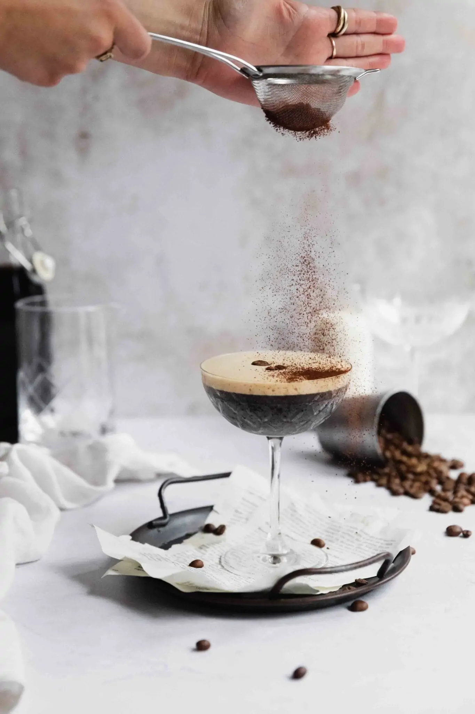

Espresso Martini Recipe

Description
Get your caffeine fix with this bold and boozy espresso martini recipe. Made with just 3 simple ingredients, you’ll love this espresso martini for a fun cocktail at home. Stay energized!
Ingredients
- 2 ounces vodka
- 1 ounce Kahlua or a comparable coffee liqueur
- 1 ounce brewed espresso, cooled.
- coffee beans, optional garnish
Method
- Combine the espresso, vodka, and Kahlua in a cocktail shaker with ice.
- Shake until well mixed and cold.
- Strain the espresso martini into a cocktail glass.
- If desired, top with a dusting of espresso powder and coffee beans for garnish. Enjoy responsibly!